Привет 👋
Эта книга познакомит тебя с современной системой тестирования Swift Testing, которая пришла на замену XCTest.
important
XCTest — не депрекейтнули, но Swift Testing является более современным и продуманным направлением, избегая классические проблемы и неудобства предшественника.
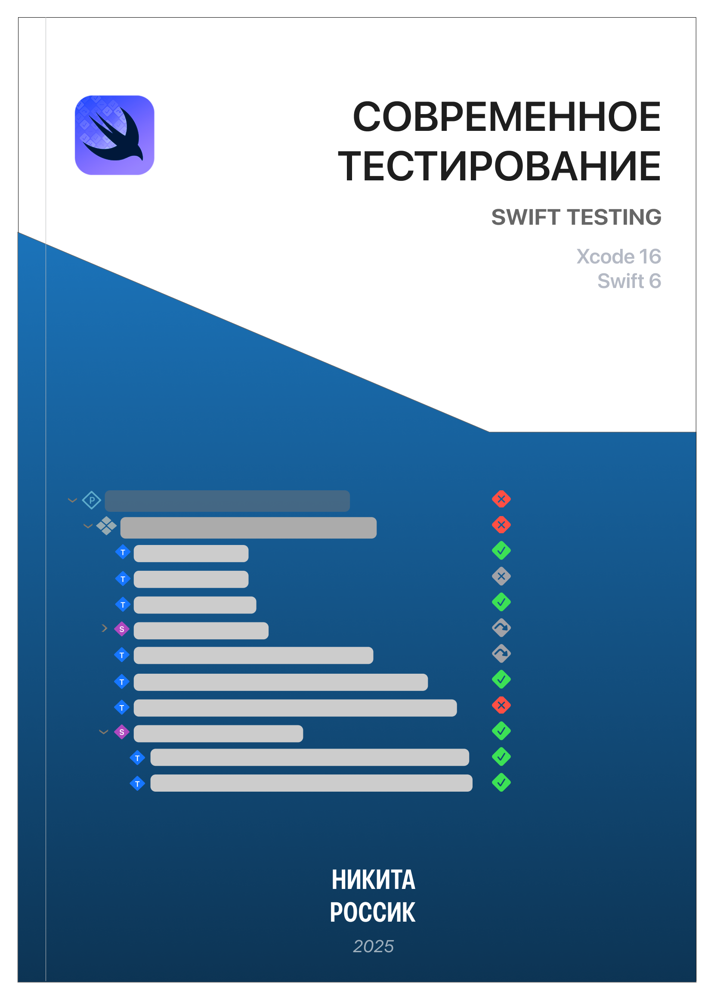
Данный фреймворк (Swift Testing) нацелен на работу с языком Swift 6.0 и сокращает запоминание слов начинающихся с XCT* до двух макросов, тем самым освобождая ресурсы мозга на более затратные операции. Помимо этого, из коробки присутствует поддержка конкурентного вычисления, поддержка структур, акторов, init, deinit и трейтов (trait). Возможно ты не знаком с макросами, но благодаря им инженеры Apple смогли создать Swift Testing.
Материал в книге структурирован и усложнение происходит постепенно, поэтому если ты хотел(а) изучить современную разработку под платформу , то почему бы не начать с современного способа тестирования?
Как говориться, поехали!
Базовые макросы сравнения
В этой главе ты изучишь базовые макросы сравнения. Ты можешь использовать проект из этой книги или создать пустой проект, добавив в таргет новую систему тестирования.
Для начала необходимо создать новый проект или добавить таргет в существующий, указав на Swift Testing.

После создания напишем глобальную функцию, импортировав новый фреймворк Testing:
import Testing
@Test
func calculateTotal() { }
Данная функция не отличается от обычной swift функции, за исключением добавленного атрибута @Test.
note
С помощью атрибута @Test сообщаем, что функция подлежит тестированию.
Другие условия, когда функция будет тестируемой, помимо атрибута @Test:
- Может быть глобальной или быть методом в типе данных
- Может быть асинхронной и помечена как
throws - Может быть изолирована глобальным актором (например,
@MainActor)[1]
Макрос сравнения #expect
На примере калькулятора импортируем внутренний (internal) модуль и фреймворк Testing:
// Мое приложение называется ModernApp
@testable
import ModernApp
import Testing
@Test
func calculateTotal() async {
let calc = BestCalculator(value: [3, 5, 1])
await #expect(calc.total == 19)
}
note
Применив атрибут @testable ты получаешь доступ к структурам, классам, акторам и другим данных из этого модуля, даже если их уровень доступа internal.
С помощью макроса #expect() мы проверяем сумму трех чисел: 3, 5 и 1 и сравниваем её с числом 19.
Получаем ошибку сравнения, поскольку 9 не равно 19:
❌ Expectation failed: (calc.total → 9) == 19
Одна функция не ограничена одной проверкой, поэтому их может быть несколько:
@Test
func calculateTotal() async {
let calc = BestCalculator(value: [3, 5, 1])
await #expect(calc.total == 19) // ❌ Expectation failed: (calc.total → 9) == 19
await #expect(calc.value.isEmpty) // ❌ Expectation failed: (calc.value → [3, 5, 1]).isEmpty → false
await #expect(type(of: calc.value) == Array<Int>.self) // ✅ Значения калькулятора являются массивом целых чисел
}
note
Ключевое слово await используется для свойства total, поскольку BestCalculator является актором.
Макрос #expect очень гибкий. Ты можешь передать любое выражение, включая асинхронное, оператор сравнения ==, вызвать свойство .isEmpty и т.д.
При неудачном выполнени, результат сравнения будет показан наглядно и нет необходимости использовать сторонние инструменты, чтобы увидеть содержимое массива или его сумму.
Перед тем, как перейти к следующему макросу сравнения, упомяну возможности кастомизации макроса @Test.
В чем смысл нового инструмента, если он не решает никаких проблем? Правильно, поэтому ты можешь задать имя для теста:
@Test("Проверка пустой суммы калькулятора")
func calcWithEmptyValues() async {
let calc = BestCalculator(value: [])
await #expect(calc.total == .zero)
}
Имя теста можно найти во вкладке навигации тестов (⌘ + 6). Тесты, без заданных имен, обозначаются названием функции.
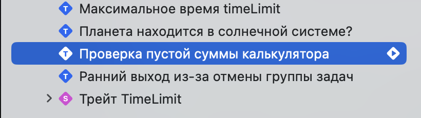
Помимо кастомизации имени, макрос @Test поддерживает другие фичи.
О других возможностях макроса @Test прочитай здесь.
Макрос сравнения #require
Иногда необходимо развернуть опциональное значение, закончить выполнение теста заранее и вернуть ошибку. Для этого можем использовать макрос #require:
@Test("Правильная проверка опционального города")
func userHaveCity() async throws {
let profileData = ProfileData()
await profileData.getProfile(id: 1)
let city: String = try #require(profileData.user?.city) // ❌ Expectation failed
#expect(city == "Ísafjörður")
await profileData.updateUserProfile()
}
❌ Expectation failed:
profileData.user → UserProfile(id: 1, firstName: "Nick", lastName: "Rossik", email: nil, city: nil).city → nil → nil
Город данного пользователя равен nil, поэтому тест завершился неудачей. Код ниже, сравнение города и метод await profileData.updateUserProfile() не был выполнен.
Макрос обязательного сравнения (required expectations) схож с предыдущим за исключением 2 деталей:
#requireиспользует ключевое словоtryи если выражение выкинуло ошибку, то осуществляется ранний выход и тест завершается неудачей.- помимо этого,
try #requireидеально подходит для получения опционального значения.
tip
try #require идеально подходит для получения опционального значения и раннего выхода функции.
Попробуем получить профиль пользователя. Заранее скажу, что при передаче в метод нулевого айди getProfile(id: .zero), пользователь не будет найден
и поэтому вернется nil.
Воспользуемся оператором guard let и попытается развернуть опциональное значение:
@Test("❌ Неправильная проверка опционального города")
func userProfileHaveCity() async {
let profileData = ProfileData()
await profileData.getProfile(id: .zero)
// Юзера с айди .zero не существует.
guard let user = profileData.user else {
return
}
#expect(user.city != nil)
#expect(user.city == "Moscow")
}
Значение profileData.user равно nil и остальная часть теста зависит от этого свойства.
В результате тест должен был завершиться ошибкой, но этого не происходит. Логика в тесте не верная!
important
Старайся использовать #require вместо guard или guard let.
Организация тестов
При появлении большого кол-ва тестов будет полезным организовать их в группу. Группа тестов может быть создана одним из 2 способов:
- Разместив функции в тип данных
- Разместив в тип данных и применить атрибут
@Suite
Тесты, которые ты ранее встречал, были глобальными, т.е. не принадлежали к какому-либо типу данных. Для организации тестов можем использовать любой тип данных существующий в Swift, например структуру:
struct UserProfileTest {
@Test("❌ Неправильная проверка опционального города")
func userProfileHaveCity() async {}
@Test("Правильная проверка опционального города")
func userHaveCity() async throws {}
// ... другие тесты
}
Навигационное меню тестов в Xcode (⌘ + 6) автоматический распознает группировку тестов.
Применение атрибута @Suite является необязательным, но с помощью атрибута можно настроить внешний вид тестов, применить различные трейты[2] и другое.
Помимо этого, типы данных могут быть вложены друг в друга:
@Suite("Тесты юзер профайла")
struct UserProfileTest {
@Test("❌ Неправильная проверка опционального города")
func userProfileHaveCity() async {}
@Test("Правильная проверка опционального города")
func userHaveCity() async throws {}
@Suite("Тестирование аватарки")
enum EmptyCitySearch {
@Test("Выбор аватарки в профиле")
func selectProfileAvatar(by query: String) {}
}
}
Раннее я не упомнял о концепции трейтов для макросов
@Testи@Suite, но чуть позже ты познакомишься с этим понятием.
Далее
В этой главе ты кратко познакомился с новым фреймворком Swift Testing. Узнал на практике как использовать новые макросы сравнения и как группировать тесты.
Я знаю, что у тебя осталось много вопросов, по типу:
- «Почему атрибут @Test — это макрос и в чем тут разница» ?
- «Как использовать макросы более продвинуто» ?
- «Кто эти ваши трейты ?
Ответы на эти и другие вопросы содержатся в следующих главах книги.
[1]Существуют некоторые ограничения и тонкости при изоляции с глобальным актором.
[2]Трейт (trait, типаж) — это набор методов, определенных для тестов
Макросы, атрибуты и организация группы тестов
Вначале отвечу на вопрос из предыдущей главы:
«Почему атрибут @Test — это макрос и в чем тут разница» ?
Если мы применяем макрос по отношению к методу — это атрибут. Без применения — это тип данных, в нашем случае макрос.
@Test // применяем атрибут к функции
func example() {...}
Разница между атрибутом и макросом состоит в контексте.
Трейт — это способ добавить дополнительную информацию или поведение к типу данных или функции.

В следующих главах, я расскажу более подробно про использование макросов, а пока ознакомься с 2 основными видами макросов.
Немного о макросах и ключевых словах
Если ты не знаком с макросами, то я дам краткую справку.
Макросы — это инструмент метапрограммирования[1], который позволяет генерировать код на этапе компиляции. Они помогают уменьшить количество boilerplate-кода, упростить разработку и повысить читаемость программы. Макросы могут добавлять новые функции, свойства, методы или даже изменять существующие структуры данных. Более подробно в документации языка.
note
Boilerplate-код — это шаблонный код, который должен быть написан во многих местах с минимальными изменениями.
Существует 2 основных вида макросов:
- Freestanding macro — в контексте программирования и в целом, freestanding можно перевести как независимый макрос.
Это означает, что такой макрос не зависит от конкретного типа данных (функции или структуры). Он существует сам по себе и может быть вызван в любом месте кода.
В Swift такие макросы объявляют с помощью символа решетки #:
func gatherInformation(about person: any Human, currentFn: String = #function) {
if person.age < 18 {
#warning("Человек не достиг совершеннолетнего возраста.")
}
print("Продолжаем выполнять метод: \(currentFn)")
// ...
}
В данном случае, если условие верное, то ты получишь предупреждение и конкретное сообщение во время компиляции.
Freestanding — это макрос, который используется независимо от других конструкций и вызывается напрямую в коде.
- Attached macro — можно перевести как прикрепленный макрос.
Attached означает, что макрос прикреплен к определенному типу данных, например, к классу, структуре, свойству или функции. Он не существует самостоятельно (как независимый макрос), а расширяет или модифицирует конкретное выражение.
В Swift такие макросы обычно вызываются с помощью символа @:
@Observable
class ProfileData {
let network = NetworkProvider()
var user: UserProfile?
var avatar: NSImage?
// ...
}
Теперь, когда ты введен в курс дела, перейдем к детальном расмотрению основных макросов фреймворка Swift Testing.
@Test(...)
Глава про макрос @Test разделена на 4 сценария:
Здесь ты столкнешься с распространенными проблемами в тестировании на практике и способы их решени.
Помимо этого, я расскажу о тонкостях работы макроса.
Прочитать о реализации данного макроса можно в главе о protocol Trait.
Условие или runtime condition
Во-первых, тесты с условием. Некоторые тесты должны выполняться только при определённых обстоятельствах — например, на конкретных устройствах или в определённом окружении (environments).
Для этого, ты можешь применить трейт условия (ConditionTrait) .enabled(if: ...):
@Test(.enabled(if: Backport.isRemoteVersion))
func backportVersion() async {
// ...
}
Ты передаешь некоторое условие, которое будет оцениваться перед запуском теста и если условие ложно, тест помечается как пропущенный и не выполняется.
→ Test 'backportVersion()' skipped
В других случаях необходимо полностью отключить выполнение теста (чтобы тест никогда не выполнялся). Для этого используй трейт .disabled(...):
@Test(.disabled("Известный баг, отключаем до фикса #PR-3781"))
func fetchFeatureFlag() async {
// ...
}
→ Test 'fetchFeatureFlag()' skipped: Известный баг, отключаем до фикса #PR-3781
Использование трейта .disabled(...) является предпочтительнее комментирования тела функции, поскольку в закомментированном состоянии — тело функции компилируется:
// Избегайте такого способа отключения теста
@Test("Закомментирую на время фикса #PR-3781")
func fetchAnotherFlag() {
// try await Task(priority: .background) {
// ...
// }
}
Тебе может показаться, что одного комментария недостаточно и по-хорошему нужно указать причину отключения: баг, ожидание PR (пулл реквеста) или иное условие. Что ж, в дополнение к комментарию ты можешь использовать трейт .bug(...), чтобы явно указать на проблему:
@Test(
"Проверка валидности поля именя",
.disabled("Бекендер исправляет модель"),
.bug("https://github.com/issue/7329", "Сломанная валидация имени и модель #7329")
)
func validateNameProperty() async throws {
// ...
}
Данный баг будет отображаться в отчете и ты сможешь перейти по ссылке, которая ассоциируется с ним:

Когда необходимо запустить тест только на конкретной версии ОС (операционной системы), можешь использовать атрибут @available(...), чтобы указать на какой версии доступен тест.
Атрибут @available(...) позволяет понимать, что у теста есть условие, связанное с версией операционной системы и точнее отражать это в результатах.
@Test
@available(macOS 15, *)
func usesNewAPIs() {
// ...
}
Избегайте использования проверки доступности с помощью макросов #available и #unavailable:
// ❌ Избегайте использования проверки доступности в рантайме с помощью #available и #unavailable
@Test
func hasRuntimeVersionCheck() {
guard #available(macOS 15, *) else { return }
// ...
}
// ✅ Используй атрибут @available для функции или метода
@Test
@available(macOS 15, *)
func usesNewAPIs() {
// ...
}

Атрибут @available(...) используется для обозначения доступности типа данных или функции, а макрос #available используется когда необходимо выполнить часть кода только в определенной версии ОС.
Общие характеристики или теги
Давай обсудим, как ты можешь объединять тесты, которые имеют общие свойства, даже если они находятся в разных типах данных или файлах. Swift Testing поддерживает создание пользовательских тегов для тестов.
note
Тег (или тэг) — это ключевое слово для обозначения общих свойств в тестах.
В моём проект я уже использовал теги. Найти их можно в навигационном меню Xcode, а именно в Test Navigator снизу.
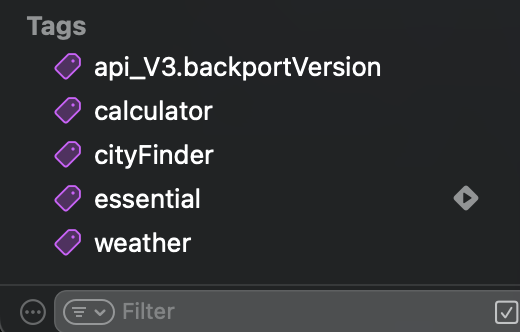
Чтобы увидеть тесты, к которым применены теги, ты можешь переключиться в новый режим группировки — по тегам.
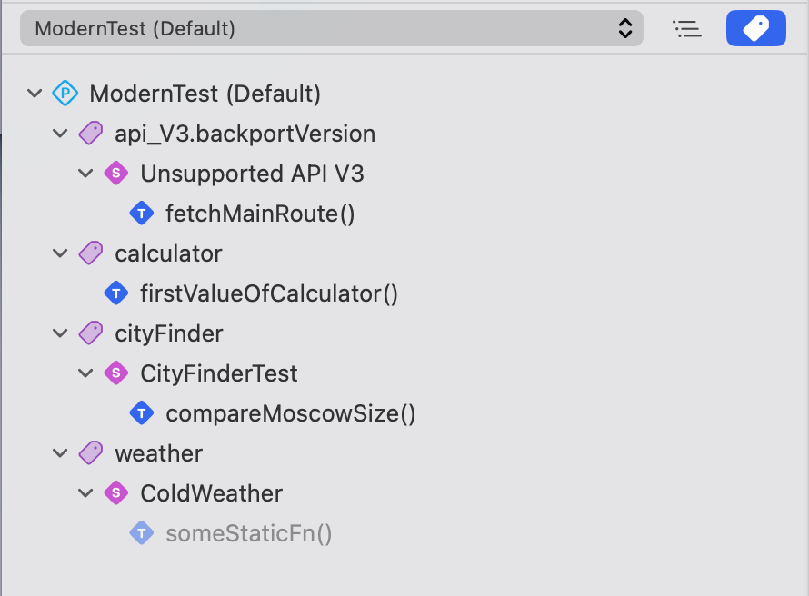
Давайте применим тег к одному из тестов. Для этого мы добавим трейт .tags(...) в атрибут @Test:
@Test("Сравниваем размер файла", .tags(.fileSize))
func checkSize() {
let fileSize = Measurement<UnitInformationStorage>(value: 2432, unit: .megabytes)
#expect(fileSize.description == "2.4MB")
}
После применения, тег отобразится в Test Navigator под соответствующим тегом. Я написал еще один тест, который также проверяет размер файла и добавлю его сюда:
@Test("Сравнение еще одного файла", .tags(.fileSize))
func checkSizeWithFormatter() {
let fileSize = Measurement<UnitInformationStorage>(value: 2432, unit: .megabytes)
let filter = Measurement<UnitInformationStorage>.FormatStyle(
width: .wide,
locale: .init(identifier: "ru_RU")
)
let formattedResult = filter.format(fileSize)
#expect(formattedResult != "2.4 Мегабайта")
}
Поскольку оба теста связаны с размером файла, давай сгруппируем их:
struct AboutFileSize {
@Test("Сравниваем размер файла", .tags(.fileSize))
func checkSize() {
let fileSize = Measurement<UnitInformationStorage>(value: 2432, unit: .megabytes)
#expect(fileSize.description == "2.4MB")
}
@Test("Сравнение еще одного файла", .tags(.fileSize))
func checkSizeWithFormatter() {
let fileSize = Measurement<UnitInformationStorage>(value: 2432, unit: .megabytes)
let filter = Measurement<UnitInformationStorage>.FormatStyle(
width: .wide,
locale: .init(identifier: "ru_RU")
)
let formattedResult = filter.format(fileSize)
#expect(formattedResult != "2.4 Мегабайта")
}
}
Теперь мы можешь применить тег fileSize к атрибуту @Suite, чтобы тег применялся ко всем тестам в этом типе данных. Поскольку теги применяются ко всем вложенным методам, то можно убрать теги из методов:
@Suite(.tags(.fileSize))
struct AboutFileSize {
@Test("Сравниваем размер файла")
func checkSize() {
// ...
}
// ...
}
Ты можешь ассоциировать теги с тестами, которые имеют общие черты. Например, ты можешь применить общий тег ко всем тестам, которые проверяют определенную функцию или вложенный тип данных. Это позволяет запускать все тесты с конкретным тегом, фильтровать их в Test Report и даже видеть аналитические данные, например, когда несколько тестов с одним и тем же тегом начинают падать.
Теги могут применяться к тестам в разных файлах, типам данных с атрибутом @Suite и даже использоваться в нескольких таргетах.
При использовании Swift Testing предпочтительнее использовать теги вместо имен тестов для их включения или исключения из тестового плана.
О том, как создать собственный тег прочитай здесь.
Аргументы
Перед прочтением тонкостей, я бы хотел показать последний процесс связанный с повторением тестов, а именно аргументами.
Предположим, что у тебя есть сервис по достопримечательностям и ты хочешь узнать информацию о каждом из них:
struct PlaceService {
func search(by name: String) async -> Bool {
let places: [String] = [
"Gullfoss",
"Saint Victor",
"Vestmannaeyjar",
"Skogafoss",
"Hong Kong"
]
return places.contains(name)
}
}
@Test
func findPlace() async throws {
let places: [String] = [
"Gullfoss",
"Moscow",
"Vestmannaeyjar",
"Skogafoss",
"Paris",
"Borocay",
"Hong Kong"
]
let service = PlaceService()
for place in places {
let result = await service.search(by: place)
#expect(result)
}
}
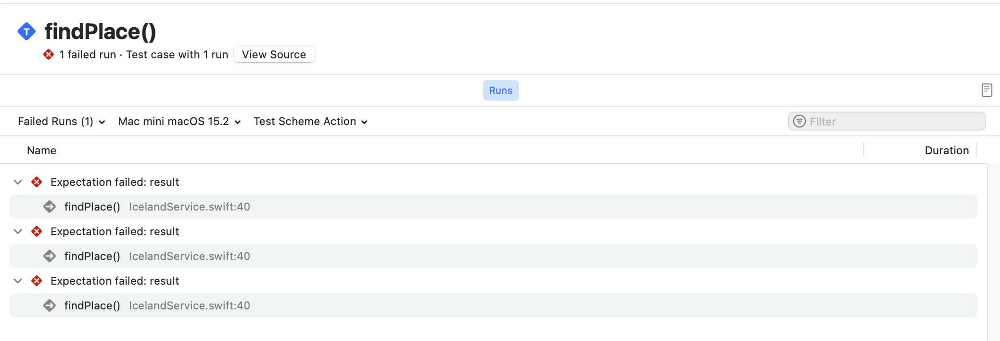
Тест выше работает, однако использование цикла for имеет свои недостатки:
- Ты не можешь видеть результат каждого вызова
#expect(…)в навигационном меню тестов. - Ты не можешь повторно запустить отдельный тест для одного элемента массива.
- Тесты выполняются последовательно.
Исправим ситуацию и передадим массив в качестве параметра arguments:
@Test(
arguments: [
"Gullfoss",
"Moscow",
"Vestmannaeyjar",
"Skogafoss",
"Paris",
"Borocay",
"Hong Kong"
]
)
func findPlace(place: String) async throws {
let service = PlaceService()
let result = await service.search(by: place)
#expect(result)
}
Просто добавь параметр в функцию, избавься от цикла for, переместите аргументы в атрибут @Test — и готово!
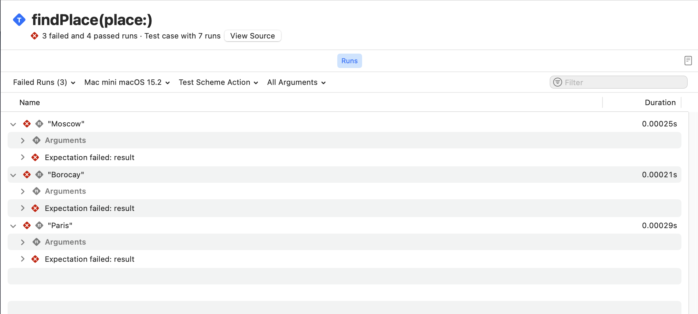
Параметризованные тесты можно использовать даже в более сложных сценариях, например для тестирования всех комбинаций двух наборов входных данных.
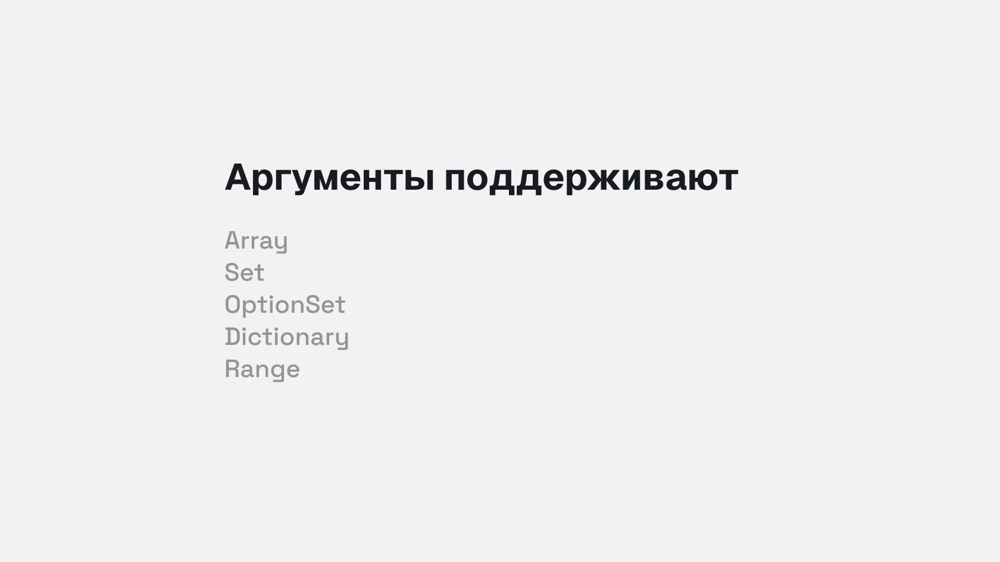
note
Слишком большой Range 0 ..< .max может выполняться очень долго или совсем не завершиться.
Тонкости
Последний параграф познакомит тебя с особенностями использования макроса @Test, которые доступны при детальном чтении исходного кода, который реализует сам макрос. За это отвечает структура данных TestDeclarationMacro.
Ты написал много методов и один из них изолирован на MainActor.
Поэтому помимо применения атрибута @Test, ты можешь применить глобальный актор, чтобы не получить ошибку компиляции на Swift 6:
@Test("Как определить, функция для теста изолирована на глобальном акторе ?")
@MainActor
func determineGlobalActor() async {
// ...
}
Для выполнения кода и изоляции на глобальном акторе, можно применить глобальный актор к функции. Если изоляция не нужна для всей функции, то можно изолировать только определенный код:
@Test
func executeAtGlobalActor() async {
await MainActor.run {
// ...
}
}
Да, разработчики подготовили специальный механизм для определения изоляции и выполнения на MainActor. Если ты знаешь как реализовать собственный глобальный актор,
то у меня плохие новости — Swift Testing не умеет определять изоляцию для
кастомных глобальных актор, только MainActor.
lazy var isMainActorIsolated = !functionDecl.attributes(named: "MainActor", inModuleNamed: "_Concurrency").isEmpty
var forwardCall: (ExprSyntax) -> ExprSyntax = {
"try await Testing.__requiringTry(Testing.__requiringAwait(\($0)))"
}
let forwardInit = forwardCall
if functionDecl.noasyncAttribute != nil {
if isMainActorIsolated {
forwardCall = {
"try await MainActor.run { try Testing.__requiringTry(\($0)) }"
}
} else {
forwardCall = {
"try { try Testing.__requiringTry(\($0)) }()"
}
}
}
note
Swift Testing умеет определять изоляцию только MainActor. Поддержки других глобальных акторов (@globalActor) нет.
Нет необходимости возвращать тип данных
Если ты внимательно читал код, то обратил внимание что ни одна функция не возвращает конкретный тип данных. Указание возвращаемого типа данных не является ошибкой, проверка с помощью макросов выполняется, но в этом случае ты получишь предупреждение:
@Test
func checkReturnType() -> any Collection {
let collection = Array(1...10)
#expect(collection.contains(10))
return collection
}
⚠️ The result of this function will be discarded during testing
Возможно в будущем, инженеры Apple добавят такую возможность, но на данный момент они не нашли подходящего сценария, при котором необходимо возвращать тип данных. Такая проверка возможна с помощью проверки сигнатуры возвращаемого типа:
if let returnType = function.signature.returnClause?.type, !returnType.isVoid {
diagnostics.append(.returnTypeNotSupported(returnType, on: function, whenUsing: testAttribute))
}
Неподдерживаемые ключевые слова
На момент выхода книги, в структуре данных TestDeclarationMacro, которая реализует макрос @Test, существуют неподдерживаемые ключевые слова:
struct TestDeclarationMacro: PeerMacro, Sendable {
// ...
// Ключевые слова inout, isolated или _const не поддерживаются.
for parameter in parameterList {
let invalidSpecifierKeywords: [TokenKind] = [.keyword(.inout), .keyword(.isolated), .keyword(._const),]
// ...
}
}
Это легко проверить, создав тест с одним из этих ключевых слов:
@Test("Проверка не поддерживаемых слов")
func parameterCanBeSupported(value: isolated (any Actor)? = #isolation) {}
❌ Attribute
Testcannot be applied to a function with a parameter markedisolated
А теперь посмотри на ключевое слово _const:
func withImmutableValue(value: _const String) -> {
value
}
Значения, известные на этапе компиляции (compile-time constant values), — это значения, которые могут быть известны или вычислены во время компиляции и гарантированно не изменяются после её завершения. Использование таких значений может служить различным целям: от обеспечения правил и гарантий безопасности до предоставления пользователям возможности создавать сложные алгоритмы, выполняемые на этапе компиляции.
note
Ознакомится более подробно с _const.
Test только для func
Возможно тебе захочется применить атрибут для теста замыкания, но ничего не выйдет. При сборке таргета с тестами, кнопки запуска не появится. Или иными словам, ты можешь применить атрибут только для функций или методов:
guard let function = declaration.as(FunctionDeclSyntax.self) else {
diagnostics.append(.attributeNotSupported(testAttribute, on: declaration))
return false
}
1 атрибут для 1 функции
Да, для кого-то это покажется слишком очевидным, но применить атрибут @Test можно только 1 раз:
let suiteAttributes = function.attributes(named: "Test")
if suiteAttributes.count > 1 {
diagnostics.append(.multipleAttributesNotSupported(suiteAttributes, on: declaration))
}
Не приминим для Generics
Атрибуты @Test и @Suite не могут быть применены к дженерикам:
/// Create a diagnostic message stating that the `@Test` or `@Suite` attribute
/// cannot be applied to a generic declaration.
static func genericDeclarationNotSupported(_ decl: some SyntaxProtocol, whenUsing attribute: AttributeSyntax, becauseOf genericClause: some SyntaxProtocol, on genericDecl: some SyntaxProtocol) -> Self {
if Syntax(decl) != Syntax(genericDecl), genericDecl.isProtocol((any DeclGroupSyntax).self) {
return .containingNodeUnsupported(genericDecl, genericBecauseOf: Syntax(genericClause), whenUsing: attribute, on: decl)
} else {
// Avoid using a syntax node from a lexical context (it won't have source location information.)
let syntax = (genericClause.root != decl.root) ? Syntax(decl) : Syntax(genericClause)
return Self(
syntax: syntax,
message: "Attribute \(_macroName(attribute)) cannot be applied to a generic \(_kindString(for: decl))",
severity: .error
)
}
}
Получаем ошибку компиляции:
@Test
func sumOf<V: Numeric>() {
// ...
}
❌ Attribute 'Test' cannot be applied to a generic function
@Suite
Глава про макрос @Suite разделена на 4 сценария:
- Объединение в группу
- Настройка отображаемого имени
- Поддержка методов
- Ограничения и тонкости использования
Объединение в группу
Что приходит на ум при работе с большим количеством функций?
Правильно, возможность упорядочить их с помощью чего-либо, а ещё лучше объединить их в один тип данных.
Макрос @Suite идеально подходит не только для объединения в один тип данных, а так же для использования трейтов.
Вообще, такая группировка возможна в 2ух сценариях:
- С помощью пользовательских типов данных
- Применяя атрибут @Suite для пользовательских типов данных
К таким типам данных относят: struct, class, actor и enum.
@Suite
struct SingleProfile {...}
@Suite
class SharedService {...}
@Suite
actor DatabaseProvider {...}
@Suite
enum SwaggerAPI {...}
tip
@Suite не является обязательным атрибутом для применения, но позволяет использовать трейты, подобные в макросе @Test, для расширения функционала.
Атрибут @Suite не является обязательным для распознавания тестовых функций, содержащихся в типе, но его использование позволяет настраивать отображение типа данных в IDE и в командной строке. Если к типу данных применён трейт, такой как .tags(...) или .disabled(...), он автоматически наследуется всеми тестами, содержащимися в этом типе данных.
Пользовательские типы данных могут содержать не только функции для тестирования, но и другие методы. Также они могут содержать вложенные типы данных. Чтобы добавить вложенный тип данных, нужно объявить дополнительный тип внутри основного.
По умолчанию тесты в рамках одного типа данных выполняются параллельно. Подробнее о параллелизации можно узнать в разделе Конкурентный и последовательный запуск тестов.
Настройка имени данным
Чтобы задать имя для типа данных, передайте строковый литерал в качестве аргумента для атрибута @Suite:
@Suite("Food truck tests")
struct FoodTruckTests {
@Test func foodTruckExists() {
// ... логика
}
}
Для дальнейшей настройки внешнего вида и поведения метода можно использовать трейты, такие как .tags(...).
Методы для тестирования в Suite
Если метод для тестирования объявлен как метод экземпляра (без использования ключевых слов static или class), библиотека тестирования вызывает этот обычный метод (без атрибута @Test), а затем вызывает метод на этом экземпляре. Например:
@Suite
struct ColdWeather {
@Test
func dressWarm() {
#expect(-10 + -3 == -13)
}
}
Эквивалентно следующему:
@Suite
struct ColdWeather {
func dressWarm() {
#expect(-10 + -3 == -13)
}
@Test
static func someStaticFn() {
let instance = ColdWeather()
instance.dressWarm()
}
}
В консоли Xcode ты увидишь вывод:
◇ Suite ColdWeather started.
◇ Test someStaticFn() started.
✔ Test someStaticFn() passed after 0.001 seconds.
✔ Suite ColdWeather passed after 0.001 seconds.
✔ Test run with 1 test passed after 0.001 seconds.
Что здесь происходит?
- Ты реализовал метод
dressWarm()в качестве обычного метода, но использовал макрос сравнения#expect(...) - В методе
static someStaticFn()применил атрибут@Test, создал инстанс типа данныхColdWeather()и только затем вызвал методdressWarm()
Как видно выше, статический метод завершился успехом, поскольку выражение-10 + -3 == -13 является верным.
А что будет, если временно отключить статический метод и запустить тест для типа данных?
@Suite
struct ColdWeather {
func dressWarm() {
#expect(-10 + -3 == -13)
}
@Test(.disabled())
static func someStaticFn() {
let instance = ColdWeather()
instance.dressWarm()
}
}
В таком случае запуск тестов для ColdWeather осуществится без ошибок, но и тестировать попросту будет нечего. Это не является ошибкой, это особенность данного фреймворка:
◇ Suite ColdWeather started.
✘ Test someStaticFn() skipped.
✔ Suite ColdWeather passed after 0.001 seconds.
✔ Test run with 1 test passed after 0.001 seconds.
Ограничения для типов Suite
При использовании типов данных вместе с атрибутом @Suite накладываются дополнительные ограничения:
- Необходимость наличия инициализатора
Если тип содержит методы для тестирования, он должен быть инициализирован без свойств принимающих значения. Инициализатор может быть:
- явным или неявным;
- синхронным или асинхронным;
- бросающим исключения (
init() throws); - любого уровня доступа (
private,internal,public).
Пример:
@Suite
struct FoodTruckTests {
var batteryLevel = 100
@Test
func foodTruckExists() {...} // ✅ OK: есть неявный инициализатор.
}
@Suite
struct CashRegisterTests {
private init(cashOnHand: Decimal = 0.0) async throws {...}
@Test
func calculateSalesTax() {...} // ✅ OK: доступен явный инициализатор.
}
struct MenuTests {
var foods: [Food]
var prices: [Food: Decimal]
@Test
static func specialOfTheDay() {...} // ✅ OK: функция статическая.
@Test
func orderAllFoods() {...} // ❌ Ошибка: типу требуется инициализатор.
}
Компилятор выдаст ошибку, если тип данных не удовлетворяет этому требованию.
Атрибут @available можно применять к функции или методу, чтобы ограничить её доступность во время выполнения. Однако типы данных, включая вложенные, не могут быть аннотированы этим атрибутом:
@Suite
struct FoodTruckTests {...} // ✅ OK: тип всегда доступен.
@available(macOS 11.0, *) // ❌ Ошибка: тип данных должен быть всегда доступен.
@Suite
struct CashRegisterTests {...}
@available(macOS 11.0, *)
struct MenuItemTests { // ❌ Ошибка: вложенный тип должен быть доступен.
@Suite
struct BurgerTests {...}
}
Компилятор выдаст ошибку, если тип данных нарушает это правило.
Атрибут @available(...) используется для обозначения доступности типа данных или функции.
@Tag
Помимо группировки с помощью типов данных, ты можешь группировать отдельные функции или целые типы данных с помощью тегов.
Тег — это ассициированное ключевое слово, относящееся к типу данных или отдельным функциям или методам.
Цель тега — объединить и классифицировать данные по одному или нескольки ключевым словам. Вначале книги ты уже ознакомился с тегами и знаешь зачем они нужны.
Данная глава включает в себя:
По мере роста проекта или отдельного пакета количество тестов может вырости до сотни или тысячи. Некоторые из этих тестов могут пересекаться, т.е. иметь общие свойства или относится к одной и той же категории. Swift Testing имеет из коробки макрос @Tag
с помощью которого можно группировать тесты.
По смысловому значению макрос @Tag отличается от @Suite. @Suite применяется к типам данных, а теги предоставляют семантическую информацию, которая может быть общей для любого количества тестов, исходных файлов или таргетов.
Добавление тега в проект
Для такой группировки используем трейт .tag(...), который ты встречал ранее в книге.
Если тег применен к типу данных в макросе @Suite, то все методы будут сгруппированны соответсвующим тегом.
note
Следует отменить, что применение тегов происходит в runtime.
Сами по себе теги являются экземплярами структуры Tag. Для добавления собственного тега в проект необходимо сделать расширение данной структуры:
extension Tag {
/// Все, что связано с калькулятором
@Tag
static var calculator: Self
}
В расширении мы объявляем статическое свойство, указывающее на этот же тип и применяет макрос @Tag. Сам по себе макрос @Tag не принимает никаких параметров.
important
Библиотека тестирования не присваивает никакого семантического значения тегам. Наличие или отсутствие тегов не влияет на то, как библиотека тестирования выполняет тесты.
Иногда возникает ситуация, когда имя тега уже используется в другом таргете или файла.
В таком случае ты можешь использовать reverse-DNS именование для создания уникального имени:
extension Tag {
enum api_V3 {}
}
extension Tag.api_V3 {
@Tag
static var backportVersion: Tag
}
Вызови следующим образом:
@Suite("Unsupported API V3", .tags(.api_V3.backportVersion))
struct BackportedAPI {
@Test
func fetchMainRoute() async throws {
// ...
}
}
Ошибки добавления тега
Теги должны быть объявлены только в расширении структуры Tag:
extension Tag {
@Tag
static var calculator: Self // ✅ OK: Создали новый тег
@Tag
static let
static var programmerCalculator: Self // ❌ Ошибка: тег не распознан в runtime
static var devCalculator: Self { // ❌ Ошибка: тег не распознан в runtime
calculator
}
}
Другим сценарием служит глобальное объявление, которое так же не поддерживается:
@Tag
let featureRelease: Self // ❌ Ошибка: Тег должен быть объявлен в расширении Tag, а не глобально
@Suite
struct SingleProfile {
@Tag
var onlySingleProfile: Self // ❌ Ошибка: Тег должен быть объявлен в расширении Tag, а не в типе данных
// ...
}
Цвет тегов
После добавление тега, в панели навигации виден его цвет. Xcode предоставляет только один цвет — фиолетовый.
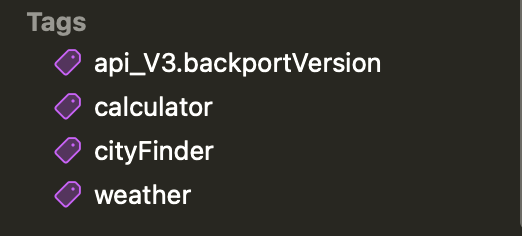
Для вывода в терминале, библиотека тестирования предоставляет следующие цвета для команды swift test:
- Красный
- Оранжевый
- Желтый
- Зеленый
- Синий
- Фиолетовый
Стоит упомнять о забавном факте в истории Apple.
Инженеры Apple используют цвета из оригинальной ОС System 7 (1991 г, позже назвали Mac OS 7), поэтому если ты сделал тег одним из имен ниже, то при вызове команды swift test цвет тега изменится.
extension Tag {
@Tag
static var essential: Self
}
@Test(.tags(.essential))
func showTestName() {
#expect(Test.current?.displayName == nil)
}
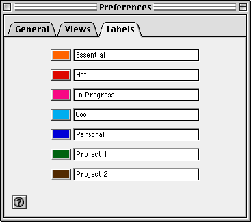
note
Изменение цвета тега не касается Xcode, поскольку эта функция эксперементальная.
Скрытый макрос
Ты наверняка знаешь о скрытом функционале компилятора: свойства, методы, атрибуты и прочие выражения, доступ к которым можно получить с помощью нижнего подчеркивания:
var number: Int {
@inline(__always) get {
return number
}
}
// или другой пример
func makeSomething(@_implicitSelfCapture fn: @escaping () -> Void) {
fn()
}
// или еще один
_canBeClass(MainActor.self)
Так вот, библиотека Swift Testing включает макрос, доступ к которому можно получить таким же способом — через нижнее подчеркивание:
@Test
func matchFileSourceLocation() {
let fileLine: Int = 33
let locationOfThisTest = #_sourceLocation()
#expect(fileLine == locationOfThisTest.line)
}
❌ Expectation failed: (fileLine → 33) == (locationOfThisTest.line → 39)
Макрос #_sourceLocation()
Независимый макрос указывающий на местоположение в исходном коде. Сценарии использования могут быть разными, например для улучшения читаемости сообщений об ошибках в тестах, указании на конкретный модуль или имя исходного файла.
Информация о модуле, имени файла и других свойствах собирается на этапе компиляции.
func getTestLocation(testName: String = #function) {
let location = #_sourceLocation()
print("Запущен тест \(testName) в файле \(location.fileName)\nМодуль: \(location.moduleName)")
}
@Test
func followTheWhiteRabbit() {
getTestLocation()
let movie = Movie(name: "The Matrix")
#expect(movie.mainCharacter == "Keanu Beeves")
}
◇ Test followTheWhiteRabbit() started.
Запущен тест followTheWhiteRabbit() в файле IssueExample.swift
Модуль: ModernAppTests
❌ Expectation failed: "Keanu Beeves" == "Keanu Reeves"
Реализация
За реализацию макрос отвечает тип данных SourceLocation.
Ниже я перечислил все доступные свойства на момент выхода книги:
struct SourceLocation: Sendable {
var fileID: String {...}
var fileName: String {...}
var moduleName: String {...}
var line: Int {...}
var column: Int {...}
}
fileIDуникальный идентификатор исходного файла.fileNameимя исходного файла.moduleNameимя модуля, в котором находится данный исходный файл.lineстрока по счету в исходном файле.columnстолбец по счету в исходном файле.
note
SourceLocation используется в реализации макроса @Test и других трейтах.
Если интересно, почему в имени макроса присутствует нижнее подчеркивание, то взгляни на объявление:
@freestanding(expression)
public macro _sourceLocation() -> SourceLocation = #externalMacro(module: "TestingMacros", type: "SourceLocationMacro")
Ранее ты изучил информацию о атрибуте @freestanding(...) и знаешь, что это обозначает. Если это не так, ничего страшного, просто вернись назад и освежи знания.
Доступ к макросу развязывает пальцы и ты можешь сделать интеграцию с каким-либо мессенджером.
Вместо вызова функции print() можно будет отправлять запросы в группу телеграма и видеть ход выполнения тестов.
Другой вопрос, насколько это целесообразно — решай сам.
protocol Trait
В переводе на русский, trait — это Типаж, но в книге я чаще употребляю простой вариант — Трейт.
Перед тем, как я расскажу для чего он нужен, попробуем переместиться в язык программирования Rust, который содержит ключевое слово trait. Trait необходим для объявления набора правил, которые будут реализованы. Данная концепция очень схожа с ключевым словом protocol в swift.
// Внутри новой системы тестирований находится основной трейт
// Он же swift-testing/Sources/Testing/Traits/Trait.swift
public protocol Trait : Sendable {...}
Данный протокол описывает, какие трейты могут быть добавлены к макросам @Test и @Suite. Помимо этого протокол Trait является корневым (главным).
Библиотека Swift Testing содержит готовые трейты, созданные инженерами Apple. Помимо этого, ты сам вправе добавить собственный трейт.
О создании собственных трейтов сказано в этой главе.
note
Трейт в новой системе тестирования — есть протокол, подписанный на основной протокол Trait.
Встроенные трейты
Инженеры из Apple заранее подготовили определенное количество трейтов для использования.

Далее в книге ты ознакомишься с каждым из них.
Справка
Каждый макрос @Test принимает ноль и более трейтов. Это возможно благодаря:
- экзестенциальному
any - вариативному (variadic) параметру (3 точки)
...
Справка о any и вариативном параметре
- Ключевым словом any обозначают любой тип данных, реализующий протокол N.
func showEachElement(for collection: any Collection) -> Void {
collection.forEach {
print($0)
}
}
let data: String = "Swift Testing"
let smallRange: ClosedRange = 0...5
showEachElement(for: data)
showEachElement(for: smallRange)
- Вариативный параметр — это параметр, который принимает 0 или множество значений конкретного типа данных. Обозначается с помощью 3 точек после типа данных:
func quickMath(numbers: Int...) -> String {
let sum = numbers.reduce(.zero, +)
let cosValue = cos(Double(sum))
let sinValue = sin(Double(sum))
return """
🎉 Добро пожаловать на сервер Тригонометрии! 🎉
Сумма чисел: \(sum)
Косинус числа: \(sum) = \(cosValue)
Синус числа: \(sum) = \(sinValue)
"""
}
// Значения перечисляются через запятую
quickMath(numbers: 30, 60, 90)
Объявление макросов @Test и @Suite
Каждый макрос @Test принимает ноль и более трейтов TestTrait:
public protocol TestTrait: Testing.Trait {}
// Макрос @Test
@attached(peer)
public macro Test(_ traits: any Testing.TestTrait...) = #externalMacro(module: "TestingMacros", type: "TestDeclarationMacro")
Каждый макрос @Suite принимает ноль и более трейтов SuiteTrait:
public protocol SuiteTrait: Testing.Trait {
var isRecursive: Bool { get }
}
// Макрос @Suite
@attached(member)
@attached(peer)
@_documentation(visibility: private)
public macro Suite(_ traits: any SuiteTrait...) = #externalMacro(module: "TestingMacros", type: "SuiteDeclarationMacro")
Если ты не знаком с ключевми словами из кода выше, такими как @attached(member) и другие, то рекомендую вернуться в главу введения макросов и прочитать более подробно.
Комментарий
Comment — тип данных отвечающий за комментарии в тестах.
Данный тип данных используется для добавления информации о тесте, объяснении того, как именно работает сложный тест. А быть может, ты хочешь предоставить детали, которые могут быть полезны при диагностике проблемы, специфичные для этого теста.
note
Комментарий необходим для указания полезной информацией о тесте или типе данных.
Отличие от обычного комментария
Да, предполагаю что ты и так знаешь, как добавить комментарий к исходному коду в Swift. В отличии от обычного комментария, комментарий добавленный к тесту укажет на проблему быстрее. Причина очень проста — если тест не пройдет проверку, ты увидишь комментарий связанный с этим тестом. Это особенно полезно при использовании инструментов CI/CD или в других логах.
Комментарий добавляется выше атрибутов @Test или @Suite.
Использование
Чтобы добавить комментарий, используй 2 слеша // перед атрибутом @Test или @Suite:
// Проверям предложения на рынке и ищем только 2-комнатную квартиру
@Test
func availableApartment() async {
let roomForOne = ApartmentSearcher(criteria: [.single, .studio])
let result = await roomForOne.result()
#expect(result.contains { $0.type == .twoBedroom })
}
❌ Test availableApartment() failed after 0.001 seconds with 1 issue.
↳ // Проверям предложения на рынке и ищем только 2-комнатную квартиру
Одиночный комментарий // Проверям предложения на рынке и ищем только 2-комнатную квартиру добавлен к тесту. Тест не прошел проверку, поэтому помимо названия теста в консоли, ты видишь дополнительную информацию о нем.
Еще одной особенностью является применение комментария к типам данных.
Без атрибута @Suite блочный комментарий не учитывается в выводе консоли:
/*
Максимально оптимизированный поиск по рынкам РФ и РБ.
Без дополнительных фильтров.
*/
struct FastApartmentSearcher {
// ...
}
❌ Suite FastApartmentSearcher failed after 0.001 seconds with 1 issue.
Комментарий выше не был напечатан, но если ты применишь атрибут @Suite, то вывод станет доступен:
/*
Максимально оптимизированный поиск по рынкам РФ и РБ.
Без дополнительных фильтров.
*/
@Suite
struct FastApartmentSearcher {
// ...
}
// ❌ Suite FastApartmentSearcher failed after 0.001 seconds with 1 issue.
/*
↳ Максимально оптимизированный поиск по рынкам РФ и РБ.
Без дополнительных фильтров.
*/
Помимо этого атрибуты @Test и @Suite поддерживают другие стили, кроме одиночного:
| Синтаксис | Описание |
|---|---|
| // ... | Комментарий в одну строку |
| /// ... | Документация в одну строку |
| /* ... */ | Комментарий в блоке |
| /** ... */ | Документация в блоке |
Различие между комментарием и именем теста
Рассмотрим 2 примера. В первом случае зададим имя для теста:
@Test("Проверям предложения на рынке и ищем только 2-комнатную квартиру")
func availableApartment() async {
// ...
}
❌ Test "Проверям предложения на рынке и ищем только 2-комнатную квартиру" failed after 0.001 seconds with 1 issue.
Во втором случае, имя теста не задано, но указан комментарий:
// Проверям предложения на рынке и ищем только 2-комнатную квартиру
@Test
func availableApartment() async {
// ...
}
❌ Test availableApartment() failed after 0.001 seconds with 1 issue
↳ Проверям предложения на рынке и ищем только 2-комнатную квартиру
Как ты видишь, в консоли или твоем CI/CD вывод будет различаться, поскольку имя теста и комментарий служат для различных целей. Я не стал указывать третий случай: имя и комментарий вместе, поскольку разница будет и так понятна.
important
В навигационном меню тестов Xcode отображается только имя теста, а не его комментарий.
Условие
ConditionTrait — это тип данных, который определяет условие, при котором тест будет выполнен или пропущен.
Перед тобой может возникнуть ситуация, когда тест должнен выполниться при определенных условиях. Например, тест должен выполняться только на определенной версии ОС или на определенной локали устройства. С помощью этого типа данных ты можешь пропустить выполнение теста, если имеются такие условия.
note
Используется в обоих атрибутах @Suite и @Test
Выполнить при условии
Частым сценарием использование служит определенное условие:
@Test(.enabled(if: WeatherService.shared.userGrantPermission))
func weatherPermission() {
// ...
}
В этом случае тест будет выполнен, если пользователь дал разрешение на текущую геопозицию. Иначе, тест будет пропущен.
Ты можешь применять трейт .enabled(if:) в конкретных условиях для всего типа данных:
let count = 5
@Suite(.enabled(if: count >= 1))
struct WeatherGroup {
@Test(.enabled(if: count == 3))
func nextSevenDays() async throws {
// ...
}
@Test
func today() async throws {
// ...
}
@Test(.enabled(if: count > 10))
func findSunnyDays() async throws {
// ...
}
}
Трейт применяется ко всем методам структуры, даже там, где это явно не указано.
В этом случае тест nextSevenDays() и findSunnyDays() будут пропущены, поскольку
не соответствуют условию.
❌ Test nextSevenDays() skipped.
❌ Test findSunnyDays() skipped.
Пропустить выполнение
Если ты хочешь пропустить выполнение теста без каких-либо условий, используй трейт .disabled():
@Test(.disabled("Отключили из-за проблем с производительностью"))
func asyncSequencePhotos() async {
// ...
}
Более сложным примером служит пропуск теста с определенными условиями:
func shuttleReachedAtmosphere(layer: AtmosphereLayer) -> Bool {
// ...
}
@Test(
"Корабль преодолел уровень стратосферы?",
.disabled(if: SpaceShuttle.shared.liftOff),
.disabled(if: shuttleReachedAtmosphere(layer: .thermosphere))
)
func shuttleAboveStratosphere() throws {
// ...
}
Ты можешь написать вспомогательную функцию для более сложного случая, как в примере выше.
Комбинирование
Ты можешь комбинировать 2 трейта одновременно:
let isEnabledForSomeReason: Bool = true
@Test(
.enabled(if: isEnabledForSomeReason),
.disabled("Отключили до фикса бага #243"),
.bug(id: "243")
)
func showFastPath() throws {
// ...
}
При таком комбинировании, оба трейта срабатывают. Тест должен быть выполнен, но из-за указания трейта .disabled() он будет отключен по причине указанной в комментарии:
❌ Test showFastPath() skipped: "Отключили до фикса бага #243"
В противоположном случае, проверка условия в трейте .enabled(if: isEnabledForSomeReason) не проходит и трейты ниже не выполняются:
let isEnabledForSomeReason: Bool = false
@Test(
.enabled(if: isEnabledForSomeReason),
.disabled("Отключили до фикса бага #243"),
.bug(id: "243")
)
func showFastPath() throws {
// ...
}
❌ Test showFastPath() skipped.
Ограничение по времени
TimeLimitTrait — тип данных, ограничивающий время выполнения теста:
Тайм-ауты тестов не поддерживают высокую точность и слишком короткие промежутки из-за вариативности в тестовой среде. Говоря о слишком коротких промежутках, я имею ввиду секунды, милисекунды, микро и наносекунды. Ограничение времени должно быть выражено только в целых минутах и составлять не менее 1 минуты.
Использование
Для применения этого трейта вызовите метод timeLimit в макросе @Test или @Suite:
@Suite("Трейт TimeLimit", .timeLimit(.minutes(0)))
struct TimeLimitExample {
@Test
func takeYourTime() {
#expect(60.0 == 60.0)
}
@Test(.timeLimit(.minutes(1)))
func anotherDay() {
#expect(0.3 == 0.3)
}
}
Наследование времени просходит от родительского @Suite.
Если макрос @Test или @Suit принимают более 2 трейтов с ограничением времени, то за максимальное время выполнения будет взято наменьшее значение.
В примере с TimeLimitExample наименьшее время выполнения 0 минут, поэтому тест завершается неудачей.
❌ Time limit was exceeded: 0.000 seconds
Попробуйте запустить тест ниже:
@Test(
"Максимальное время timeLimit",
.timeLimit(.minutes(1)),
.timeLimit(.minutes(5))
)
func maxTimeLimit() async throws {
try await Task.sleep(for: .seconds(120))
#expect(true)
}
Когда тест или suite не успевают выполнится в установленное время, вызывается ошибка из трейта Issue.Kind.timeLimitExceeded(timeLimitComponents:). В таком случае тест завершается неудачей.
❌ Time limit was exceeded: 60.000 seconds
Баг 🐞
Баг — тип данных предоставляющий отчёт о баге.
Тесты позволяют разработчикам доказать, что написанный ими код работает так, как и ожидается. Если код работает неправильно, то используются системы учёта ошибок (баг-трекеры). Устоявшейся практикой считается прикрепить ошибку к конкретному тесту, чтобы проверить и/или уточнить статус — баг исправлен или нет.
note
Стоит различать трейт багов от трейта проблем (Issue).
Использование
Для указания на конкретный баг, используй трейт .bug(...) в атрибуте @Test:
@Test(
"Вход с неправильными данными",
.bug("https://example.com/bug/71")
)
func loginInvalidCredentials() async {
let profile = UserProfile()
await profile.login(option: .singInWithApple)
#expect(profile.isSuccessLogin)
}
В самом простом варианте, ты передаешь ссылку в баг-трекинг:
.bug("https://example.com/bug/71")
Возникает вопрос, как тебе посмотреть информацию о этом баге?
Для начала перейди в отчет тестов, например: как показано на скриншоте Jump to Report.
При переходе в отчет ты увидишь ссылку иконку бага с указанным URL:
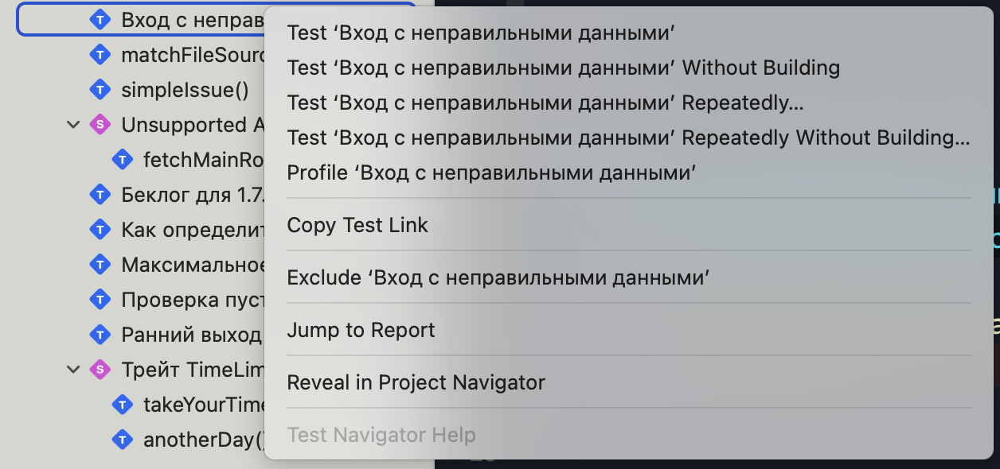
В правом вверхнем углу иконка бага и кликабельная ссылка для перехода в баг-трекер.
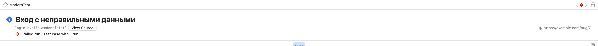
Помимо ссылки, трейт .bug(...) может принимать айди бага:
@Test(
"Вход с неправильными данными",
.bug(id: 71)
)
func loginInvalidCredentials() async {
// ...
}
В таком случае, ты ссылаешь на айди бага для баг-трекинга. Кнопка не кликабельна, поскольку мы не указали URL.
Айди (ID) — уникальный признак, позволяющий отличить один объект от другого.
В последнем варианте ты можешь указать айди в дополнение или вместо URL:
@Test(
"Вход с неправильными данными",
.bug(id: 483),
.bug("https://example.com/bug/71", id: 71)
)
func loginInvalidCredentials() async {
// ...
}
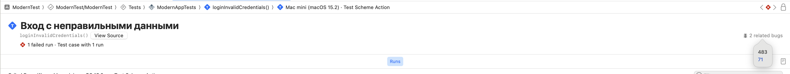
note
URL должен быть передан в качестве строки и соответствовать RFC 3986[1].
Однако, одного айди может быть недостаточно для однозначной идентификации бага связанного с тестом, поэтому трейт .bug(...) предоставляет еще одно свойство title:
@Test(
"Вход с неправильными данными",
.bug(id: 483, "Вход с такими данными невозможен во всех сценариях")
)
func loginInvalidCredentials() async {
// ...
}
tip
Описание бага используется только для программистов и недоступно в отчете, этакая подсказка для себя и/или коллег.
Централизация багов
Идея централизации багов в баг-трекере отличная, это удобно при работе в одиночку или целой команды, поиск и ведение беседы, ты сам понимаешь преимущества. Возникает вопрос:
Как централизировать (организовать) баги в коде?
Вместо отдельных URL ссылок на баг-трекинг систему, лучшей идей будет использовать централизорованную систему, по аналогии с веб версиями баг-трекеров. Посмотри на пример:
enum ProfileBugs {
case createNewOne
case updateWithInvalidData
case deleteConfirmation
case pictureUploadFileSize
case updateTimeout
// ...
var url: String {
switch self {
case .createNewOne: "https://example.com/bug/24"
case .updateWithInvalidData: "https://example.com/bug/71"
// ...
}
}
var title: String {
switch self {
case .createNewOne: "Ошибка при создании профиля"
case .updateWithInvalidData: "Ошибка при обновлении с невалидными данными"
// ...
}
}
}
Данный пример лиш один из множества возможных вариантов организовать баги. Теперь осталось передать URL в инициализатор трейта:
@Test(.bug(ProfileBugs.createNewOne.url))
func createNewProfile() async {
// ...
}
Как ты догадался, централизованная система делает код более организованным, удобным для поддержки и менее подверженным человеческим ошибкам. Это особенно полезно в проектах с большим количеством тестов.
Обработка параметров
Библиотека тестирования предоставляет 2 способа обработки параметров:
- Ссылка (URL) предоставляющая больше информации о баге
- Уникальный идентификатор связанный с баг-трекинг системами
Ты уже ознакомился и знаешь, что трейт .bug(...) должен принимать один из указанных выше параметров для корректной обработки библиотекой тестирования. Проверка валидности строки осуществляется в соответсвии RFC 3986 и происходит на этапе компиляции:
@Test(.bug("com.invalid.domain/id?=63"))
func handleOutput() async {
// ...
}
⚠️ URL "com.invalid.domain/id?=63" is invalid and cannot be used with trait 'bug' in attribute 'Test' (from macro 'Test')
В случае, если URL не прошел валидацию, ты получишь предупреждение о неправильности строки. Поскольку это предупреждение, сборке и запуску тестов это не мешает.
Другим валидным примером URL послужит компания Apple, которая использует внутреннюю систему баг-трекинга, называемой Radar:
@Test(.bug("rdar://16488816"))
func anotherBug() {
// ...
}
Ниже представлена таблица с примера на различные баг-трекинг системы.
| Трейт | Определяется баг-трекинг системой |
|---|---|
.bug(id: 79262) | Нет |
.bug(id: "79262") | Нет |
.bug("https://www.example.com?id=79262", id: "79262") | Нет |
.bug("https://github.com/swiftlang/swift/issues/79262") | GitHub Issue |
.bug("https://bugs.webkit.org/show_bug.cgi?id=79262") | WebKit Bugzilla |
.bug(id: "FB79262") | Apple Feedback Assistant |
.bug("rdar://79262") | Apple Internal Bug System |
.bug("https://opensource.tbank.ru/-/issues?id=79262") | T-Bank трекер |
.bug("youtrack.wildberries.ru/issue/PROD-3.5.21") | Wildberries YouTrack |
Проблема (Ишью)
Ишью — тип данных отвечающий за показ ошибок или предупреждений в ходе выполнения тестов.
В практическом написании тестов ты столкнешься с ошибками или предупреждениями, которые генерируются с помощью данного типа.
Явный вызов ишью
Существуют различные ситуации, когда тебе необходимо вручную вызвать ошибку в тесте. Я бы не сказал, что это распространенная практика, но о таком способе ты должен знать.
@Test
func checkVoltage() {
let electricity = ElectricityStation()
guard electricity.highVoltage else {
Issue.record("Слишком высокое напряжение")
return
}
}
❌ Issue recorded ↳ Слишком высокое напряжение
В самом простом варианте информация об ошибке доступна во Test Navigator, видна в консоли Xcode и выводится в xctestplan.
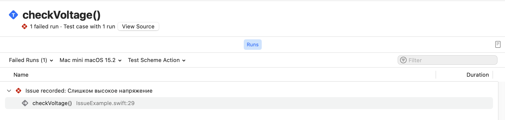
Конкурентный и последовательный запуск тестов
Serialized — тип данных позволяющий контролировать конкурентное или последовательное выполнение тестов.
По умолчанию
Тесты выполняются конкурентно (concurrency) по умолчанию. Это возможно благодаря использованию метода withTaskGroup(of:returning:body:) из раздела Structured concurrency[1].
Количество одновременно запущенных тестов управляется в runtime.

Последовательное выполнение
Для последовательного выполнения теста с множеством аргументов используй трейт .serialized:
@Test(.serialized, arguments: Food.allCases)
func prepare(food: Food) {
// ...
}

Функция
prepare(food:)будет выполнять последовательно каждый из аргументов.
Атрибут @Suite принимает такой же трейт:
@Suite(.serialized)
struct IsolationConfirmation {
@Test(arguments: IsolatedData.allCases)
func executeWith(data: IsolatedData) async throws {
// Выполнение этой функции будет последовательным,
// аргумент за аргументом.
}
@Test
func uniqlyExecute() async throws {
// Данная функция не будет запущена до тех пор,
// пока executeWith(data:) выполняется. Прежде
// чем начать выполнение необходимо дождаться
// завершение предыдущей.
}
}
extension IsolationConfirmation {
@Suite
struct NonIsolatedData {
// Все функции в этом типе данных будут
// выполняться последовательно
}
}
В примере выше ты применил трейт .serialized и все функции с атрибутом @Test, включая вложенные типы данных, будут выполняться последовательно.
important
Трейт .serialized применяется рекурсивно. При применении к атрибуту @Suite, любая функция с атрибутом @Test будет выполнятья последовательно, включая вложенные типы данных.
Применение трейта не влияет на выполнение других типов данных и тестов в других файлах. Эффект будет только на там, где указан .serialized.
Другим примером, когда применение трейта не имеет эффекта, послужит пример ниже:
@Test
func findPalindrome() {
let word: String = "Madam"
let result = word.filter(\.isLetter).lowercased().reversed()
#expect(word.lowercased() == String(result))
}
Применение трейта к одиночной глобальной функции не имеет никакого эффекта.
Ты получишь предупреждение, если функция не имеет параметров, а атрибут @Test не имеет аргументов.
⚠️ Trait '.serialized' has no effect when used with a non-parameterized test function
Если ты передал флаг --no-parallel в команду swift test, то применение трейта не будет иметь эффекта, посколько ты глобально отключил конкурентное выполнение.
note
На момент выхода книги не существует обратного трейта, который выполняет тесты конкурентно.
[1]Познакомится с новым подходом можно в моей книге Structured Concurrency не магия.
Тег
Tag — тип данных отвечающий за пользовательские теги.
Возможно я запутал тебя, поскольку ты прочитал о макросе @Tag, а сейчас читаешь
про трейт .tag(...). Да, в первом случае с помощью макроса ты создаешь собственный тег, а в трейте применяешь его. Надеюсь стало более понятно.
После создания
После создания собственного тега им нужно оперировать, а именно применить.
Для применения используй трейт .tag(...):
@Test(.tags(.calculator))
func firstValueOfCalculator() async {
// ...
}
В навигацинном меню Xcode ты увидишь все созданные тобой теги
Собственный трейт
Ранее я упоминал, что ты не ограничен трейтами, которые предоставили инженеры Apple для тебя. Для реализации собственного трейта нужно понять сценарий использования:
- Трейт будет использоваться только в атрибуте
@Test - Трейт будет использоваться только в атрибуте
@Suite - Трейт будет использоваться в обоих случаях:
@Testи@Suite
Предлагаю пойти по порядку и рассмотреть каждый из возможных вариантов.
Трейт для атрибута Test
На каждом проект тебе помогают различные коллеги: дизайнеры, бэкендеры, андроид разработчики, тестировщики и менеджер проекта. Представь, что ПМ (project manager) очень часто создает задачи в беклог, а ты как настоящий любитель решать интересные задачи, хочешь добиться синхронизации между беклогом и тестами.
Что ж, надеюсь задача понятна, но кратко повторю: «хочу сделать трейт .backlog с какими-то параметрами».
Как упомяналось в книге, для реализации собственно трейта необходимо соответствовать протоколу TestTrait поскольку макрос @Test принимает any TestTrait...
В самом простом варианте необходимо реализовать структуру и сделать расширение к Trait:
import Testing
struct BacklogTrait: TestTrait {}
extension Trait where Self == BacklogTrait {
static var backlog: Self { .init() }
}
// Применять как обычно
@Test(.backlog)
func onboardingUpdate() async throws {
// ...
}
Главное условие — удовлетрворить требованию протокола
Sendable.
Но твой ПМ парень не простой и указывает в бэклоге версию приложения и фича флаг. Поэтому давай добавим необходимый функционал всего за несколько строк:
enum FeatureFlag {
case yes
case no
}
enum AppVersion {
case release(any FloatingPoint)
case stage
}
struct BacklogTrait: TestTrait {
let app: AppVersion
let feature: FeatureFlag?
}
extension Trait where Self == BacklogTrait {
static func backlog(app: AppVersion, feature: FeatureFlag? = nil) -> Self {
Self(app: app, feature: feature)
}
}
Ты добавил несколько перечеслений и указал их в качестве констант в структуре BacklogTrait. Последнее, что остается сделать — изменить расширение для Trait
заменив свойство на статический метод backlog(...).
Использование:
@Test(
"Беклог для 1.7.0",
.backlog(app: .release(1.7), feature: .yes)
)
func backglogNewRelease() {}
Трейт для атрибута Suite
Ты решил, что будет полезным применять атрибут @Suite для конкретного типа данных,
соответсвующим протоколу @Observation, чтобы коллеги видели тип данных и быстрее понимали о чем речь.
По аналогии с трейтом для тестов, ты создаешь тип данных соотвестующий SuiteTrait:
@testable
import class ModernApp.ProfileData
struct ForDataSuite: SuiteTrait {
let observableType: Observable.Type
}
extension SuiteTrait where Self == ForDataSuite {
static func forData(_ data: Observable.Type) -> Self {
Self(observableType: data)
}
}
Использование:
@Suite(.forData(ProfileData.self))
struct WholeProfile {
// ...
}
Трейт для обоих случаев
В Github существует возможность установить владельца кода (code owner) с помощью файла CODEOWNERS отвечающего за код в репозитории.
Предлагаю сделать GithubOwnerTrait для обоих случаев: @Suite и @Test.
struct GithubOwnerTrait: TestTrait, SuiteTrait {
var name: String?
var githubUserURL: URL
}
extension Trait where Self == GithubOwnerTrait {
static func githubOwner(_ name: String? = nil, userURL: URL) -> Self {
Self(name: name, githubUserURL: userURL)
}
}
extension URL {
init(link: String) {
self.init(string: link)!
}
}
Реализация не отличается от первых 2 случаев за тем исключением, что ты подписываешь тип данных на 2 протокола TestTrait и SuiteTrait.
Использование:
@Suite(.githubOwner(userURL: URL(link: "github.com/wmorgue")))
struct SpeedMetrics {
@Test(.githubOwner(userURL: URL(link: "github.com/hborla")))
func anotherThing() {
let duration = Duration.seconds(120)
#expect(duration == .seconds(60 * 2))
}
// ...
}
Лучшие практики
Данная глава содержит примеры кода с коротким пояснением, которые ты встречал в книге.
Информация о текущем тесте
Ты можешь получить доступ об информации к текущему тесту, только если он выполняется,
иначе Test.current всегда будет nil:
@Test("Информация о тесте")
func information() throws {
let currentTest: Test = try #require(Test.current)
let location = #_sourceLocation()
#expect(currentTest.sourceLocation.fileName == location.fileName)
#expect(currentTest.displayName == nil)
}
❌ Expectation failed:
(currentTest.displayName → "Информация о тесте") == nil
Аргументы вместо цикла for
Первое, что приходит в голову использовать цикл for (или функции высшего порядка: map, forEach и т.д.) при работе с перечислением:
enum Planet: CaseIterable {
case mercury, venus, earth, gargantua, mars, jupiter, saturn, pluto, uranus, neptune, endurance
}
func isPlanetInSolarSystem(_ planet: Planet) -> Bool {
switch planet {
case .mercury, .venus, .earth, .mars, .jupiter, .saturn, .uranus, .neptune: true
case .pluto, .gargantua, .endurance: false
}
}
@Test("Планета находится в солнечной системе?")
func explorePlanets() {
for planet in Planet.allCases {
#expect(isPlanetInSolarSystem(planet))
}
}
Test "Планета находится в солнечной системе?" recorded an issue at ManyArguments.
❌ Expectation failed: isPlanetInSolarSystem(planet → .gargantua)
❌ Expectation failed: isPlanetInSolarSystem(planet → .pluto)
❌ Expectation failed: isPlanetInSolarSystem(planet → .endurance)
Более правильным вариантом будет использование аргументов в атрибуте @Test вместо цикла for :
@Test(
"Планета находится в солнечной системе?",
arguments: Planet.allCases
)
func matchPlanet(planet: Planet) {
#expect(isPlanetInSolarSystem(planet))
}
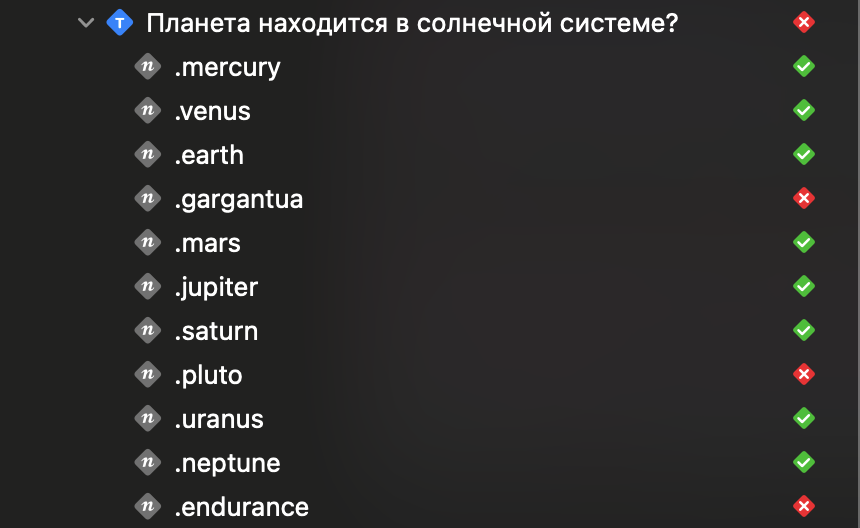
◇ Test "Планета находится в солнечной системе?" started.
◇ Passing 1 argument planet → .gargantua to "Планета находится в солнечной системе?"
◇ Passing 1 argument planet → .mercury to "Планета находится в солнечной системе?"
◇ Passing 1 argument planet → .venus to "Планета находится в солнечной системе?"
◇ Passing 1 argument planet → .mars to "Планета находится в солнечной системе?"
◇ Passing 1 argument planet → .earth to "Планета находится в солнечной системе?"
◇ Passing 1 argument planet → .jupiter to "Планета находится в солнечной системе?"
◇ Passing 1 argument planet → .saturn to "Планета находится в солнечной системе?"
◇ Passing 1 argument planet → .pluto to "Планета находится в солнечной системе?"
◇ Passing 1 argument planet → .neptune to "Планета находится в солнечной системе?"
◇ Passing 1 argument planet → .uranus to "Планета находится в солнечной системе?"
◇ Passing 1 argument planet → .endurance to "Планета находится в солнечной системе?"
✘ Test "Планета находится в солнечной системе?" recorded an issue with 1 argument planet → .gargantua at ManyArguments.swift:26:2: Expectation failed: isPlanetInSolarSystem(planet → .gargantua)
✘ Test "Планета находится в солнечной системе?" recorded an issue with 1 argument planet → .pluto at ManyArguments.swift:26:2: Expectation failed: isPlanetInSolarSystem(planet → .pluto)
✘ Test "Планета находится в солнечной системе?" recorded an issue with 1 argument planet → .endurance at ManyArguments.swift:26:2: Expectation failed: isPlanetInSolarSystem(planet → .endurance)
❌ Expectation failed: isPlanetInSolarSystem(planet → .gargantua)
❌ Expectation failed: isPlanetInSolarSystem(planet → .pluto)
❌ Expectation failed: isPlanetInSolarSystem(planet → .endurance)
И не забудь реализовать протокол CustomTestStringConvertible при работе с параметрами:
extension Planet: CustomTestStringConvertible {
var testDescription: String {
switch self {
case .mercury: "Жаркое место"
case .venus: "Экстримальное давление"
case .earth: "Безопасная Земля"
case .gargantua: "Черная Дыра"
case .mars: "Красная планета"
case .jupiter: "Газовый гигант"
case .saturn: "Властелин колец"
case .pluto: "Маленький, но гордый"
case .uranus: "Ледяной гигант"
case .neptune: "Синий гигант"
case .endurance: "Корабль надежды"
}
}
}
Теперь вместо вывода кейса, ты увидишь описание, которые ты указал выше:
# ...
◇ Passing 1 argument planet → Экстримальное давление to "Планета находится в солнечной системе?"
◇ Passing 1 argument planet → Маленький, но гордый to "Планета находится в солнечной системе?"
◇ Passing 1 argument planet → Ледяной гигант to "Планета находится в солнечной системе?"
◇ Passing 1 argument planet → Синий гигант to "Планета находится в солнечной системе?"
◇ Passing 1 argument planet → Безопасная Земля to "Планета находится в солнечной системе?"
◇ Passing 1 argument planet → Корабль надежды to "Планета находится в солнечной системе?"
✘ Test "Планета находится в солнечной системе?" recorded an issue with 1 argument planet → Корабль надежды at ManyArguments.swift:83:2: Expectation failed: isPlanetInSolarSystem(planet → Корабль надежды)
✘ Test "Планета находится в солнечной системе?" recorded an issue with 1 argument planet → Черная Дыра at ManyArguments.swift:83:2: Expectation failed: isPlanetInSolarSystem(planet → Черная Дыра)
✘ Test "Планета находится в солнечной системе?" recorded an issue with 1 argument planet → Маленький, но гордый at ManyArguments.swift:83:2: Expectation failed: isPlanetInSolarSystem(planet → Маленький, но гордый)
В навигационном меню тестов ты тоже увидишь имена, заданные раннее:
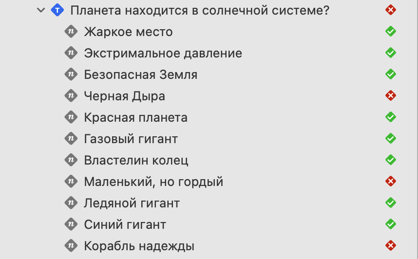
Помимо перечислений и массивов, аргемунт принимает ClosedRange:
@Test(
"Исследование планеты за время",
arguments: 90...110
)
func explorePlanets(duration: Int) async {
let spaceStation = SpaceStation(studying: .gargantua)
#expect(await spaceStation.explore(.gargantua, duration: duration))
}
Для исследования Гаргантюа требуется минимум 100 дней
Проверка доступности @available
Избегайте использования проверки доступности с помощью макросов #available и #unavailable:
// ❌ Избегайте использования проверки доступности в рантайме
// с помощью #available и #unavailable
@Test
func hasRuntimeVersionCheck() {
guard #available(macOS 15, *) else { return }
// ...
}
@Test
func anotherExample() {
if #unavailable(iOS 15) { }
}
// ✅ Используй атрибут @available для функции или метода
@Test
@available(macOS 15, *)
func usesNewAPIs() {
// ...
}
Проверка условия с помощью guard
Из-за оператора return в теле guard осуществился ранний выход из метода,
поэтому макрос #expect не сравнил цвет и результат теста оказался неверным.
@Test
func brewTea() {
let greenTea = BestTea(name: "Green", optimalTime: 2, color: nil)
guard let color = greenTea.color else {
print("Color is nil!")
return
}
#expect(color == .green)
}
❌ Плохая практика
Макрос#expectне сравнил цвет, поведение теста неверное!
На замену guard используем макрос #require, для распаковки опционального значения.
В случае, если значение color равно nil, осуществляется ранний выход и
тест не проходит проверку, вернув ошибку.
@Test
func brewTeaCorrect() throws {
let greenTea = BestTea(name: "Green", optimalTime: 2, color: nil)
let color = try #require(greenTea.color)
#expect(color == .green)
}
✅ Хорошая практика
Expectation failed:
(greenTea → BestTea(id: 32B06194-BCD9-4A4D-AEAA-9ACB3C037D95, name: "Green", optimalTime: 2, color: nil)).color → nil → nil
Ожидаемая ошибка withKnownIssue
Если ты знаешь, что свойство или метод вызовут ошибку по какой-то причине,
то можешь использовать специальную функцию withKnownIssue, чтобы тест был пройден:
@Test
func matchAvailableCharger() {
withKnownIssue("Порт зарядки сломан") {
try Supercharger.shared.openChargingPort()
}
}
❌ Test matchAvailableCharger() passed after 0.001 seconds with 1 known issue
Confirmation
При написании тестов возникают ситуации, когда ты хочешь подтвердить выполнение кода, комплишн хендлера или когда ты хочешь проверить вызов делегата.
При вызове await confirmation(...) ты передаешь замыкание соответсвующее типу Confirmation:
@Test("Вызов метода расчета размера после загрузки")
func cleanupAfterDownload() async {
let downloader = CoreMLDownloader()
await confirmation() { confirmation in
downloader.onCompleteDownload = { _ in confirmation() }
_ = await downloader.size(for: CoreMLModel(.fastViT))
}
}
Для подтверждения события, которое не будет выполнено, передай ноль:
await confirmation(expectedCount: 0) { confirmation in
// ...
}
note
Используй await confirmation() когда хочешь вызвать callback.
А теперь к другой ситуации. Часть твоего кода была написана уважаем человеком,
любящим использовать коллбеки и теперь при переходе на SC ты должен оборачивать
каждый метод с помощью continuation:
@Test
func launchRocket() async throws {
let rocket = await Rocket.prepareForLaunch()
try await withCheckedThrowingContinuation { continuation in
rocket.launch(with: .systemCheck) { result, error in
if let result {
continuation.resume(returning: result)
} else if let error {
continuation.resume(throwing: error)
}
}
}
}
Swift Testing автоматически оборачивает синхронный код с коллбеком, поэтому нет необходимости использовать withCheckedThrowingContinuation в тестах.
important
Не используй механизм синхронизации CheckedContinuation между синхронным и асинхронным кодом в тестировании!
Отключай тест, а не комментируй
По привычке ты захочешь закомментировать тело теста, чтобы ничего не выполнялось:
@Test("Закомментирую на время фикса #PR-3781")
func fetchAnotherFlag() {
// try await Task(priority: .background) {
// ...
// }
}
Однако в библиотеке тестирования закоментированный код будет скомпилирован. Поэтому лучшей практикой будет пропуск теста, вместо комментария тела:
@Test("Закомментирую на время фикса #PR-3781", .disabled())
func fetchAnotherFlag() {
// ...
}
note
Вместо комментария тела функции используй трейт .disabled()
Кто управляет тестами?
Возможно ты задавал себе вопрос: «Кто-то же запускает написанные мной тесты, но кто именно» ? В этой главе я дам более точный ответ на заданный вопрос.
Глава про управление тестами разделена на 3 сценария:
Введение в типы данных
Runner — тип данных отвечающий за выполнение тестов в соответствии с заданой конфигурацией и планом. Основная задача — организовать и запустить массив тестов, управлять выполнением и обрабатывать результаты выполнения тестов.
Каждый запуск теста состоит из плана, массива тестов и конфигурации. Об этом ты прочитаешь ниже, но в начале рассмотрим все свойства и инициализаторы:
public struct Runner: Sendable {
public var plan: Plan
public var tests: [Test] { plan.steps.map(\.test) }
public var configuration: Configuration
// 1-ый инит
public init(testing tests: [Test], configuration: Configuration = .init()) async {
let plan = await Plan(tests: tests, configuration: configuration)
self.init(plan: plan, configuration: configuration)
}
// 2-ой инит
public init(plan: Plan, configuration: Configuration = .init()) {
self.plan = plan
self.configuration = configuration
}
// 3-ий инит
public init(configuration: Configuration = .init()) async {
let plan = await Plan(configuration: configuration)
self.init(plan: plan, configuration: configuration)
}
}
Runner представляет собой структуру данных c 3 свойствами:
- Свойство
planотвечает за план действий при запуске тестов. - Свойство
testsхранящее массив тестов, которые будут выполнены. - Свойство
configurationотвечающее за настройку для подготовки и запуска тестов.
Помимо этого существует 3 инициализатора, каждый из которых не обходится без обязательной конфигурации и плана.
Во всех случаях используется конфигурация по умолчанию: Configuration = .init().
important
Ты не можешь создавать собственный план или конфигурацию для передачи в Runner.
План
Plan — тип данных описывающий план для Runner, а именно какие тесты будут запущены, в каком порядке и с каким действием (Action):
extension Runner {
public struct Plan: Sendable {
public enum Action: Sendable {
public struct RunOptions: Sendable, Codable {
// ...
}
// ...
}
// ...
public struct Step: Sendable {
public var test: Test
public var action: Action
}
}
}
Структура Plan представляет собой:
Step: представляет собой шаг в ходе выполнения. Каждый шаг состоит из самого теста, который должен быть выполнен и действия, которое должно быть выполнено для этого теста.Graph: создает иерархию шагов (Step)- Другие вспомогательные методы, например: метод отвечающий за рекурсивное применение действий (
Action).
Тип данных Plan структурирует тесты в виде графа:
var stepGraph: Graph<String, Step?>
public var steps: [Step] {
stepGraph
.compactMap(\.value)
.sorted { $0.test.sourceLocation < $1.test.sourceLocation }
}
И как я ранее сказал, в каждом плане есть действие, которое требуется сделать с тестом:
enum Action: Sendable {
case run(options: RunOptions)
indirect case skip(_ skipInfo: SkipInfo)
indirect case recordIssue(_ issue: Issue)
}
Run: тест будет выполнен.Skip: тест будет пропущен по причинеSkipInfo.RecordIssue: запись проблемы по которой тест не был выполнен.
Конфигурация
Configuration — отвечает за настройку и управление поведением тестов. Данная структура отвечает за конкурентное или последовательное выполнение тестов, устанавливает ограничение по времени для выполнения тестов, отвечает за политику повторого повторения и другое:
public struct Configuration: Sendable {
public init() {}
public var isParallelizationEnabled: Bool = true
public var repetitionPolicy: RepetitionPolicy = .once
public var defaultSynchronousIsolationContext: (any Actor)? = nil
public var maximumTestTimeLimit: Duration? { /* ... */ }
public var exitTestHandler: ExitTest.Handler = { exitTest in
// ...
}
// ...
Инициализатор пустой, т.е. не содержит свойств для начальной настройки. Вручную у тебя нет возможности создать собственную конфигурация для тестов, как я написал ранее.
Запуск теста
Наконец-то ты добрался до секции запуска.
Как ты знаешь, в любых язык программирования существует EntryPoint.
Запуск любой программы начинается с точки входа. Это касается и Swift Testing, поскольку
это тоже программа.
Точка входа (EntryPoint) — адрес в оперативной памяти, с которого начинается выполнение программы.
После того, как ты написал свой первый тест и запустил его, происходит следующее:
- Создается конфигурация по умолчанию в методе
configurationForEntryPoint(from:) - Запускается
Runnerс указанной конфигурацией - Значение
runner.testsприсвается константеtests - Происходит запуск тестов с помощью метода
await runner.run()
public func configurationForEntryPoint(from args: __CommandLineArguments_v0) throws -> Configuration {
var configuration = Configuration()
configuration.isParallelizationEnabled = args.parallel ?? true
// ...
}
func entryPoint(passing args: __CommandLineArguments_v0?, eventHandler: Event.Handler?) async -> CInt {
// ...
let tests: [Test]
var configuration = try configurationForEntryPoint(from: args)
let runner = await Runner(configuration: configuration)
tests = runner.tests
await runner.run()
}
public func __swiftPMEntryPoint(passing args: __CommandLineArguments_v0? = nil) async -> CInt {
#if !SWT_NO_FILE_IO
// Ensure that stdout is line- rather than block-buffered. Swift Package
// Manager reroutes standard I/O through pipes, so we tend to end up with
// block-buffered streams.
FileHandle.stdout.withUnsafeCFILEHandle { stdout in
_ = setvbuf(stdout, nil, _IOLBF, Int(BUFSIZ))
}
#endif
return await entryPoint(passing: args, eventHandler: nil)
}
await Testing.__swiftPMEntryPoint() as Never
Конечно, на деле запуск тестов не такой простой, как я описал.
Помимо этого происходят различные проверки и глава о запуске превратится в главу о проверках перед запуском.
Именно поэтому я намеренно упростил объяснение запуска тестов с помощью EntryPoint.
note
Если есть желание ознакомится более подробно, ты всегда можешь прочитать исходный код Swift Testing.
С первым шагом справились и тесты запущены, но возникает следующий вопрос: «Как завершить тест упехом или неудачей»?
Завершение теста и выход
После того, как ты запустил тест, было бы славно его завершить. Для такого случая, существует специальный тип данных.
ExitTest — тип данных отвечающий за завершение теста.
public typealias ExitTest = __ExitTest
public struct __ExitTest: Sendable, ~Copyable {
// ...
static func handlerForEntryPoint() -> Handler {
// ...
}
}
В методе конфигурация вызывает метод для выхода из тестов: handlerForEntryPoint()
configuration.exitTestHandler = ExitTest.handlerForEntryPoint()
Таким образом, каждый из тестов завершается каким-то результатом. И сразу следует спросить, а какой из результатов завершения существует?
Для ответа на этот вопрос посмотри на перечисление ExitCondition:
public enum ExitCondition: Sendable {
public static var success: Self {
.exitCode(EXIT_SUCCESS)
}
case failure
case exitCode(_ exitCode: CInt)
case signal(_ signal: CInt)
}
В самых простых вариантах тест завершается успехом .success или неудачей .failure.
Существуют другие варианты выхода из теста один из которых выход с помощью кода выхода, а другой с помощью сигнала.
Код выхода (возврата) — целое число, возвращаемое программой после ее завершения.
Статическое свойство .success завершает тест с помощью кода выхода .exitCode(EXIT_SUCCESS).
В свою очередь EXIT_SUCCESS равен нулю:
#define EXIT_FAILURE 1
#define EXIT_SUCCESS 0
#expect(EXIT_SUCCESS == .zero)
XCTest или Swift Testing ?
Возможно ты писал тесты с помощью XCTest и задумался о переходе на более современный подход. Swift Testing имеет как общие черты с XCTest, так и различия.
Данная глава включает в себя:
- Сранение функций и методов
- Сравнение XCT* с макросами
- Сравнение поддерживаемых типов данных
- Рекомендации по миграции из XCTest и недостатки Swift Testing
Сравнение функций

Тесты в XCTest — это любой метод начинающийся со слова test. Напротив, в Swift Testing ты указываешь атрибут @Test,
исключая неоднозначность в намерениях. Библиотека тестирования поддерживает больше вариантов функций: ты можешь использовать
не только методы, которые принадлежат этому типу данных, но и глобальные методы, а так же методы помеченные ключевым словом static.
В отличии от XCTest, Swift Testing подерживает трейты, чтобы указать информацию или добавить определенное поведение к типу данных или отдельным функциям.
В конце концов Swift Testing использует другой подход для конкурентного выполнения тестов: под капотом используется Structured Concurrency и поддерживаются физические устройства как iPhone или Apple Watch.
Сравнение XCT* с макросами
Взгляни на таблицу сравнения:

Сравнение результатов очень различаются в старом и новом подходах.
XCTest использует концепт различных проверок начинающихся с префикса XCAssert*.
Swift Testing имеет другой подход — существует только 2 макроса #expect и #require.

Вместо объявления множества различных проверок достаточно использовать операции сравнения языка Swift в этих макросах. Например, используй 2 знака равно ==
для проверки равенства или оператор больше чем > для сравнения 2 значений.

Кроме этого, ты можешь использовать оператор ! (восклицательный знак) для противоположной проверки.
Сравнение поддерживаемых типов данных

Говоря о типах данных, следует напомнить что XCTest поддерживает только классы,
которые наследуются от XCTestCase. В Swift Testing ты можешь использовать стуктуры, акторы и классы.
По возможности используй структуры, посколько они соответствуют value семантики и позволяют избегать ошибок с общим состоянием.
К каждому типу данных неявно применяется атрибут @Suite. Если ты хочешь задать
отображаемое имя или использовать трейт, то в таком случае ты можешь применить атрибут @Suite.
Для выполнения логики перед каждым запуском в XCTest используется метод setUp(..).
Аналогичным способом в Swift Testing используются инициализаторы, которые могут
быть помечены ключевым словом async и/или throws. Для добавления логики после
выполнения теста или типа данных ты можешь использовать деинициализатор deinit {...}.
deinitможно использовать в акторах и классах.~Copyableструктуры не поддерживаются Swift Testing, хоть и имеют возможность использоватьdeinit.
struct C: ~Copyable {
deinit {}
@Test("Ownership for sheep")
func sheepOwner() async throws {
#expect(UnicodeScalar(0x1F411) == "\u{1F411}")
}
}
❌ Ошибка — Noncopyable структуры не поддерживаются в Swift Testing.
Как я ранее упомянул, ты без каких-либо условий можешь делать вложенные типы данных.
Миграция из XCTest
Если ты задумался переписать тесты на современный подход, то у меня хорошие новости — тесты XCTest и Swift Testing могут существовать в одном таргете, поэтому ты можешь мигрировать постепенно и без создания нового таргета. Если класс XCTest содержит только 1 метод, рекомендую сделать его глобальной функцией с атрибутом @Test, это нормальная практика в Swift Testing. При именовании тестов больше не нужен префикс test.
Следует упомянуть о важном недостатке в Swift Testing.
В новой библиотеке отсутствует возможность создания автоматизации пользовательского
интерейса XCUIApplication, а так же тесты производительности XCTMetric.
important
XCUIApplication и XCTMetric не поддерживаются в Swift Testing.
Помимо этого, продолжай использовать XCTest если тесты написаны на
Objective-C, поскольку Swift Testing не поддерживает Objective-C совсем.
В конце концов избегай вызова функций из XCTest в функция Swift Testing или вызов макросов в XCTest.
important
Не вызывай функции из XCTest в Swift Testing.
Не вызывай макросы из Swift Testing в классах XCTest.
Не смешивай старый подход в новом и наоборот.
Метаданные
Финальная глава книги содержит информацию об статусах теста и другие пояснения.
Анализ результатов тестирования
После выполнения тестов, Xcode отображает иконку статуса для каждого теста.
Статус видно в Навигационном меню тестов (⌘ + 6), рядом с самой функцией, а так же в .xctestplan файле.
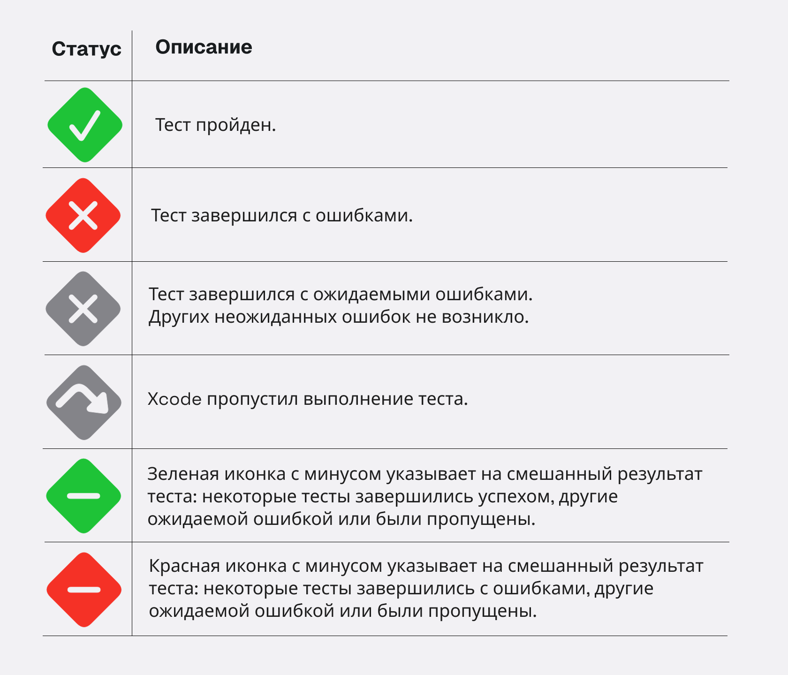
tip
Swift Testing предоставляет функционал, чтобы обозначить какой тест нужно пропустить, а какой должен завершится с ожидаемой ошибкой.
Подробнее о ожидаемой ошибке и пропуске в тесте.
План тестов .xctestplan
Большую часть книги я игнорировал существование плана для тестов (файл с расширением .xctestplan), потому что оставляю задачу по ознакомлению для тебя.
В современных проектах Xcode предлагает автоматически создать план для теста, в котором ты управляешь всеми созданными тестами, смотришь отчеты и видишь кликабельные ссылки на баги. Надеюсь ты создавал теги, поскольку с ростом количесва тестов бывает полезным отсортировать их.
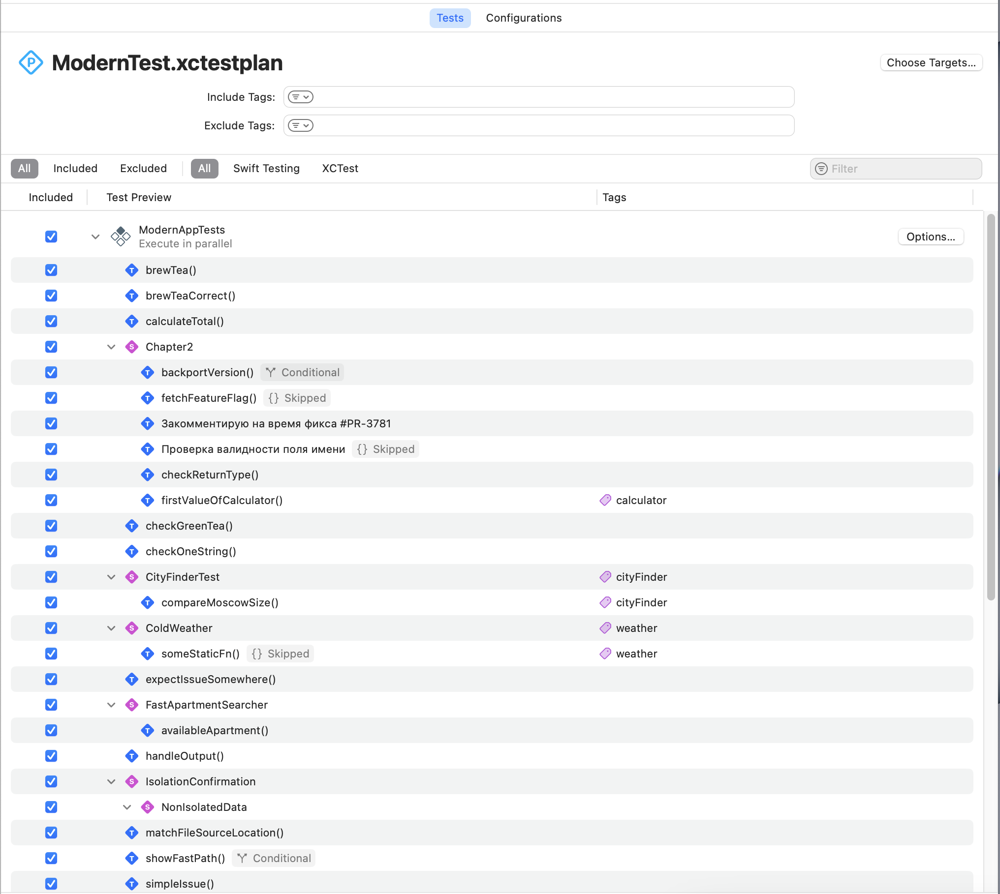
note
В процессе написания книги, я очень часто обращался к плану тестов для просмотра более детальной информации. Надеюсь ты не будешь игнорировать данный файл.
Вместо прощания
Ты ознакомился с возможностями современного тестирования на практике. Не забывай, что Swift Testing — проект с открытым исходным кодом и некоторый функционал может быть изменён с устареванием этой книги, поэтому не забывай заглядывать в репозиторий.
Библиотека работает на всех операционных системах Apple, поддерживающих Structured Concurrency, а также на Linux и Windows. Важным улучшением является единая кодовая база для всех этих платформ! Это обеспечивает более согласованное поведение тестов при переключении между платформами и лучшее функциональное соответствие.
Swift Testing интегрирован в основные инструменты и среды разработки Swift, включая Swift Package Manager (SPM) в командной строке, а также Xcode 16 и VS Code с последними версиями расширения для языка Swift.
Всего хорошего 🤝